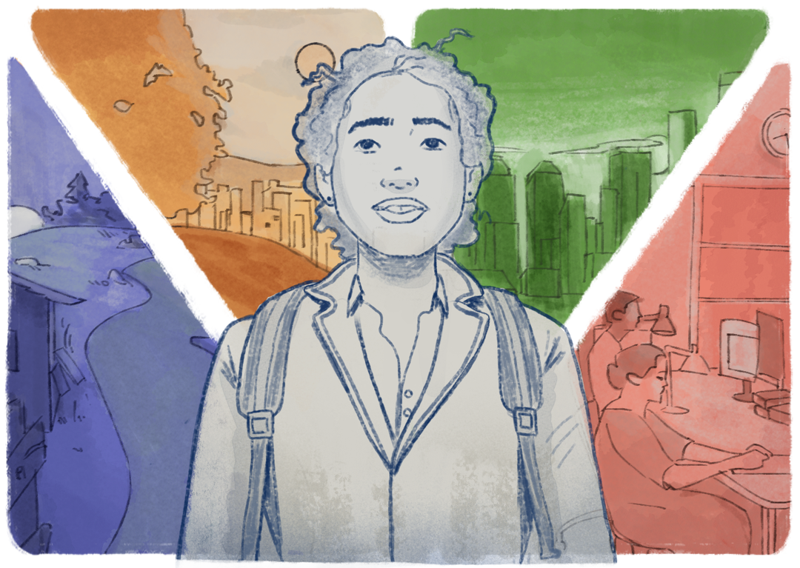

Plano de Desenvolvimento Institucional
O Plano de Desenvolvimento Institucional (PDI) de uma instituição pode tanto contemplar a intenção e o desejo de uma comunidade num determinado território quanto ser resultante de um gerencialismo que impõe suas convicções e regramento dos caminhos a serem escolhidos. Sabemos, entretanto, que o PDI é um processo, um projeto vivo, devendo ser avaliado constantemente à luz da coletividade, do interesse comum e das necessidades reais de um território.
Neste sentido, é bastante desgastante quando se abre um curso com base no proposto e disposto no PDI, mas, por uma gama de fatores e nuances, esse mesmo curso acaba não se consolidando. Isso gera uma frustração de expectativa de todo um cenário social, cultural, antropológico e econômico que, de certo modo, aposta naquela formação e não em outra. Além desse sentimento da comunidade local e regional, é preciso considerar ainda as consequências de mobilizar docentes, alocar investimentos em infraestrutura, contratar técnicos em assuntos educacionais com perfil alinhado ao curso e o uso adequado de recursos públicos. Por isso, em termos de escolha de um eixo e dos cursos para uma unidade educativa de EPT, é importante um estudo cuidadoso, um olhar atento ao contexto e alto investimento em diálogo.
O sucesso ou o fracasso de um curso, em qualquer nível de ensino, sempre dependerá de múltiplos fatores, que serão determinantes em cada contexto. Mas o rigor e o encaminhamento democrático na escolha pelo Eixo Tecnológico, a adequação do curso a critérios técnicos e a elaboração de documentos para as diretrizes de tal curso, superando o cartesianismo e o positivismo, já são bons passos para a superação de desafios e equívocos que podem inviabilizar dada formação. Veja agora os principais elementos para criação de um curso:
.png)
Título: Elementos para criação de um curso
Fonte: Prosa (2025a).
Sabemos que a procura por um determinado curso é algo muito complexo, difícil de prever e praticamente impossível de garantir no tempo. Considerando que, desde a metade do século passado, a curva da população está envelhecendo e o Brasil será em breve um país de idosos, precisamos ter em mente, ao planejar qualquer formação, a urbanização e o êxodo rural crescente – e a respectiva falha na sucessão rural. Ainda, como a interiorização é uma convicção que não tem aval na experiência prática, servidores e estudantes tendem a se estabelecer em centros maiores, onde há outros recursos aliados ao acesso à saúde, à cultura, à gastronomia, ao comércio, a aeroportos etc. Nesse sentido, a ideia de que a interiorização é uma necessidade, que possui alguma importância e que precisa ser constituída é uma romantização; na prática, a sociedade caminha no sentido inverso e não é de agora.

Título: Êxodo Rural
Fonte: Prosa (2025b).
Aqui, faz-se necessário retomar as discussões dos capítulos anteriores sobre atitudes democráticas ou antidemocráticas dentro de uma Instituição de Ensino. Isso porque não raro um grupo de docentes força a criação de um curso para chamar de seu sem que haja uma demanda coletiva e real num dado contexto.
Por vezes, até mesmo a elaboração de documentos para implementação e consolidação dos cursos surge mais por uma decisão administrativa do que por necessidade real. É por esses motivos que acabam surgindo cursos sem procura. Criam-se deficitários porque o anseio da maioria em um determinado contexto na perspectiva contra hegemônica não é representado em um território, comunidade, cidade etc. (Gramsci, 2000; 2001; 2002; 2004).
Para além dos casos em que o PDI assume a expressão de um desejo oligárquico, como supracitado, muitos documentos de cursos, por exemplo, são construídos de modo autoritário, sem diálogo, sem sintonia com a realidade e sem considerar as bases conceituais e legais da EPT, que visam a superação do ensino dual e hegemônico (Gramsci, 2000; 2001; 2002; 2004). Basta um olhar cuidadoso para notarmos o cartesianismo disposto nas ementas, bem como a organização de disciplinas que não conversam entre as suas próprias áreas e não consideram o sentido do currículo integrado. Não há aproximação nem mesmo com sua área afim, quanto mais um diálogo epistêmico entre a área básica e a técnica.
É de suma importância que a base legal e conceitual de nossos futuros cursos possam ser a expressão de uma visão dialética do mundo do trabalho, que cada futuro egresso possa ao apropriar-se reflexivamente das dimensões da vida humana, trabalho, ciência e cultura, e ser capaz de compreender, explicar e transformar os contextos. Ou seja, a perspectiva de uma visão dialética em relação à realidade.
É muito importante que os Projetos Pedagógicos de Curso (PPCs) precisam ter consignado no seu todo, do ponto de vista epistêmico, as bases legais e conceituais da EPT, pois isso é um passo importante para a construção de um processo efetivamente democrático e participativo. Mas basta acessarmos os documentos nos sites institucionais que facilmente notamos que muitos PPCs carregam como marca registrada o não cumprimento da ideia da pesquisa como pressuposto pedagógico e do trabalho como princípio educativo, tanto em seus silêncios e negligências como em suas opções teórico-metodológicas. Isso porque, em sua maioria, sendo documentos públicos, evidenciam a carga conceitual do viés positivista, que privilegia alguns conhecimentos e áreas em detrimento de outros. São raros os documentos que carregam em sua escrita considerações epistemológicas, pedagógicas, antropológicas, históricas e sociológicas suficientes e necessárias para que os cursos possam atender a natureza da EPT, em toda a sua complexidade.
Ainda, é possível que um grupo de docentes recém-chegados para atuar em um curso tenha que trabalhar, por motivos diversos, com algo que foi construído por outro grupo ou pela própria gestão da unidade. Nesses casos, geralmente não há possibilidade de diálogo ou contribuição para que as ementas ou direcionamentos dos componentes curriculares possam atender também as expectativas de quem irá efetivamente assumir o ensino de tal saber. Com isso, os profissionais terão que dedicar-se a ensinar no cotidiano algo que não é de sua convicção e que não reflete sua participação na elaboração.